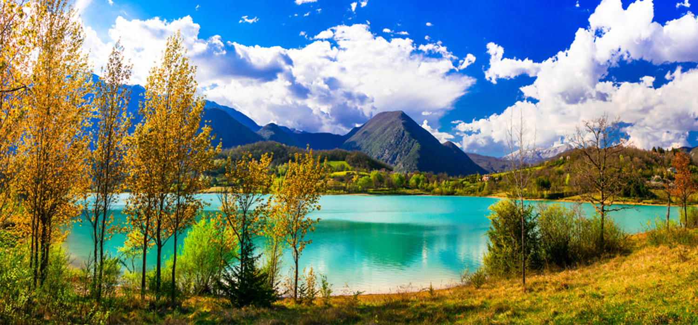
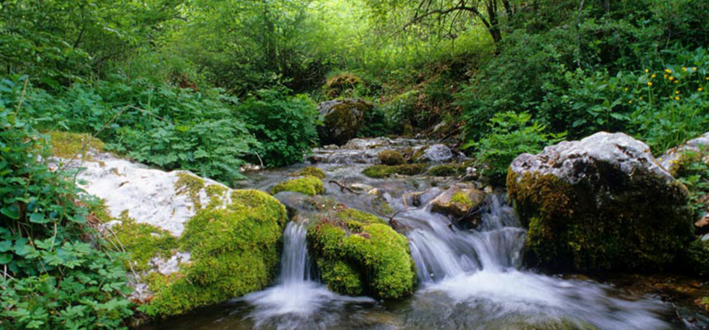
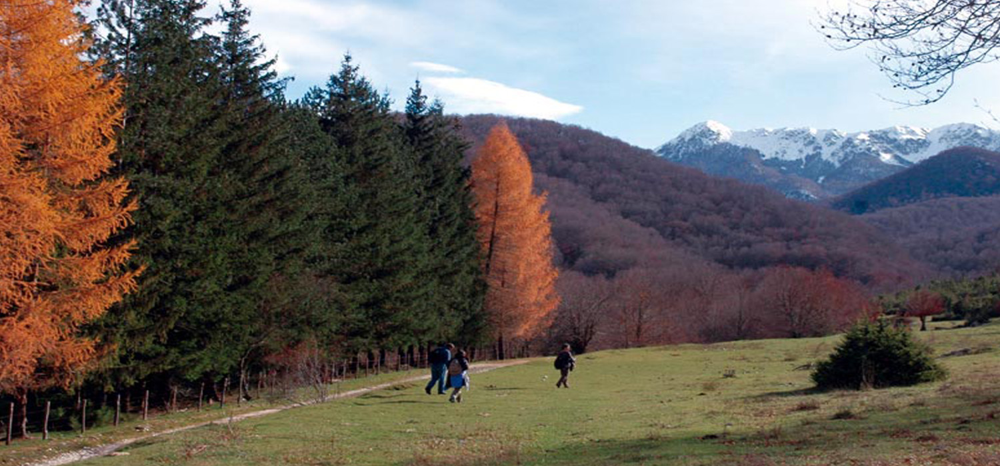

Parco Nazionale d’Abruzzo, Lazio e Molise
Fondato nel 1923, il Parco Nazionale d’Abruzzo, Lazio e Molise è uno dei più antichi e prestigiosi parchi italiani. Si estende su un territorio prevalentemente montuoso e ricco di foreste, nel cuore dell’Appennino centrale.
La sua importanza è legata alla presenza di specie simbolo come l’orso bruno marsicano e il lupo appenninico, ma anche alla bellezza naturale di valli, torrenti e altopiani in cui il tempo sembra essersi fermato. I borghi che punteggiano l’area protetta conservano tradizioni locali millenarie, offrendo un connubio perfetto tra natura incontaminata e cultura appenninica.
Visitare questo parco significa entrare in contatto con un pezzo fondamentale della storia della conservazione italiana e con paesaggi che in ogni stagione assumono un fascino particolare.
Pescasseroli è considerato la “capitale” del parco, sede del Centro Visita e di strutture turistiche in grado di rispondere a diverse esigenze. Da qui, è possibile accedere a numerosi sentieri che si snodano tra boschi di faggio, radure e pascoli d’alta quota
Altra tappa imperdibile è la Camosciara, un’area particolarmente suggestiva che deve il suo nome al camoscio appenninico, uno degli ungulati più rari e simbolici della fauna montana italiana. Il Lago di Barrea, incastonato in un contesto paesaggistico di grande armonia, rappresenta un ottimo punto di partenza per escursioni o semplicemente per rilassarsi lungo le sponde.
Tra i borghi interni, Opi, Villetta Barrea e Civitella Alfedena meritano una visita per il fascino dei loro vicoli e la calorosa accoglienza degli abitanti. Da non perdere anche le faggete vetuste, dichiarate Patrimonio UNESCO, che offrono un colpo d’occhio eccezionale soprattutto durante il foliage autunnale.
Attività specifiche
All’interno del parco si possono intraprendere diversi itinerari di trekking, sia di bassa che di media-alta difficoltà, studiati per far conoscere la ricchezza biologica del territorio. Alcune escursioni guidate hanno come obiettivo l’avvistamento dell’orso marsicano o del camoscio, in orari particolarmente favorevoli, come l’alba o il tramonto. Gli appassionati di mountain bike trovano percorsi che alternano salite impegnative e discese panoramiche, mentre in inverno alcune zone offrono la possibilità di praticare sci di fondo o escursioni con le ciaspole.
L’osservazione faunistica e il birdwatching sono attività in crescita, grazie alla presenza di rapaci come l’aquila reale e di uccelli acquatici che stazionano lungo i corsi d’acqua. Per chi ama la cultura locale, i laboratori didattici organizzati dal parco o da associazioni locali consentono di approfondire argomenti come la caseificazione tradizionale, l’apicoltura e la lavorazione della lana. Numerosi eventi e sagre, soprattutto nei mesi estivi, animano i borghi, celebrando prodotti tipici come il pecorino, i salumi di montagna e le zuppe a base di cereali antichi.
Cenni su flora e fauna
Il Parco Nazionale d’Abruzzo, Lazio e Molise è noto in particolare per la fauna selvatica di grande pregio: l’orso bruno marsicano, sottospecie endemica dell’Appennino centrale, ne è l’emblema e testimonia l’eccellente stato di conservazione dell’habitat.
Un altro simbolo è il lupo appenninico, spesso difficile da avvistare ma fondamentale per l’equilibrio ecologico. Non mancano cervi, caprioli e cinghiali, che talvolta si spingono fino a valle in cerca di cibo. Il camoscio appenninico, considerato uno dei più belli al mondo per la forma aggraziata e il manto, trova qui uno dei suoi ultimi santuari.
Le foreste di faggio coprono una larga porzione del parco, regalando un ambiente ombroso e ricco di humus. In prossimità dei corsi d’acqua, crescono salici e ontani, mentre le zone più alte ospitano praterie e pascoli alpini. Questa varietà vegetale favorisce la biodiversità e offre al visitatore scenari sempre nuovi, dai fondovalle verdissimi alle cime rocciose.
Informazioni utili
Prima di visitare il Parco, è utile consultare il sito ufficiale o i Centri Visita per conoscere le regole di accesso a ogni isola: alcune, come Montecristo e Pianosa, hanno restrizioni più severe per proteggere l’integrità degli ecosiste
Sull’Elba, che è la più turistica, si trovano numerose strutture ricettive, campeggi e alberghi, mentre le altre isole offrono alloggi e servizi in modo più limitato. Gli spostamenti fra le isole principali sono garantiti da traghetti e aliscafi in partenza dai porti della Toscana (Piombino, Livorno e Porto Santo Stefano), ma l’orario delle corse varia a seconda della stagione.
È importante rispettare i regolamenti di pesca e di immersione stabiliti dal Parco, nonché evitare di lasciare rifiuti o danneggiare la vegetazione. Le visite guidate rappresentano un ottimo modo per approfondire la conoscenza degli ecosistemi e scoprire aspetti meno noti della storia locale. Con la dovuta attenzione e un pizzico di spirito di avventura, l’Arcipelago Toscano offre esperienze indimenticabili tra mare e terra, in un susseguirsi di panorami e profumi tipicamente mediterranei, arricchiti da un patrimonio culturale che affonda le radici nell’epoca etrusca e continua a vivere in ogni sagra di paese, in ogni borgo marinaro e in ogni sentiero in cui riecheggiano antiche leggende e storie di naviganti.
La tutela di questo patrimonio naturale è fondamentale per garantire alle generazioni future la possibilità di ammirare la fusione armoniosa tra paesaggio e tradizione, che rende le isole toscane un esempio virtuoso di gestione ambientale e culturale.